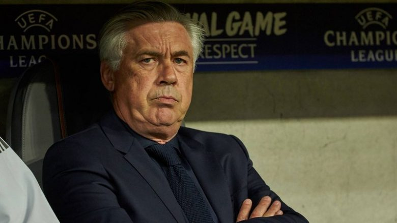
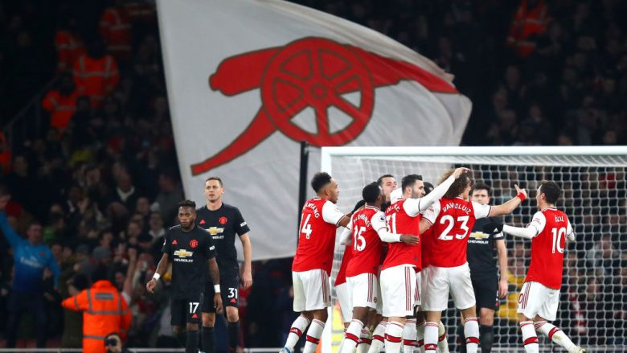
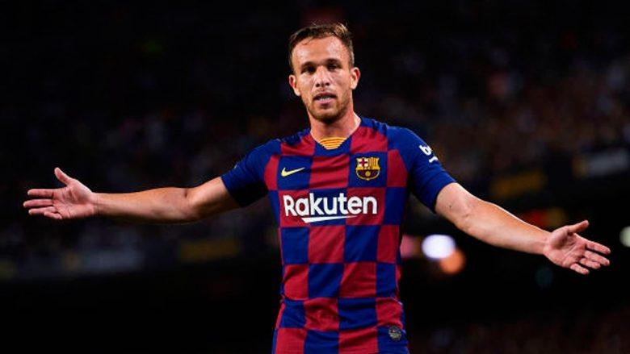

Manchester City mposht Evertonin
Manchester City ka arritur të shënojë fitore në shtëpi ndaj Evertonin me rezultat 2-1. Ndeshja doli të jetë e fortë dhe u zhbllokua vetëm në pjesën e dytë, pasi pjsa e parë nuk solli gola. Me të filluar pjesa e dytë Gabirel Jesus shënoi dy herë. Por ndeshjen interesante e bëri goli i Richarlison që shënoi në minutën e 71-të për 2-1. Deri në fund nuk kishte më gola dhe Manchester City arriti t’i marr tri pikë, që e mbajnë në vendin e tretë me 44 pikë.

Ancelotti: Guardiola është gjeni
Carlo Ancelotti e ka vlerësuar lartë Pep Guardiolan dhe taktikat e tij. Italiani ka thënë për spanjollin se është një gjeni i futbollit dhe se i vlerëson lartë taktikat e tij. “Pep është trajner fantastik. Kam marrëdhënie të mira me të. Jo shumë në ndeshje, por ne e takojmë njëri-tjetrin në konferenca nganjëherë. Kemi shumë respekt për njëri-tjetrin”, ka thënë Ancelotti. “Në raste të caktuara, ai është gjeni sepse gjithmonë përpiqet të bëjë diçka të veçantë në fushë”.

Arsenali këndellet në derbi
Arsenali ka arritur të shënojë fitore ndaj Manchester United me rezultat 2-0. Derbi anglez i buzëqeshi londinezëve që treguan formë të mirë dhe arritën ta mbyllin ndeshjen në pjesën e parë. Në pjesën e dytë United u munduan të shënojnë, por nuk ia arritën qëllimit.Arsenali tani është i 10-ti me 27 pikë, nëntë më pak se vendi i katërt që mbahet nga Chelsea. Në anën tjetër United me 31 pikë mbetet në pozitën e pestë.
